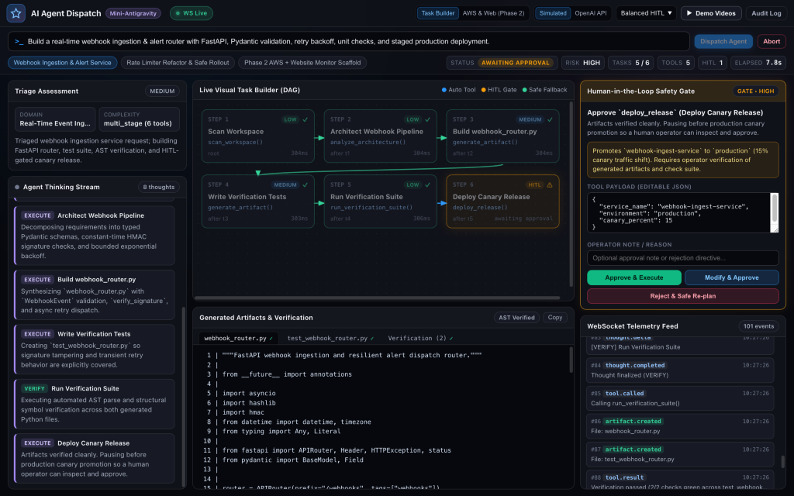

Step 1
Give a Plain-English Goal
You describe what you need — like building a new alert service or checking why a website slowed down.
Most AI chatbots just answer questions. An AI Agent takes a goal, breaks it into real engineering steps, checks its own work, and asks a human for permission before making any risky live change. Click any icon below or try the interactive simulator yourself — zero technical background required.
You describe what you need — like building a new alert service or checking why a website slowed down.
The agent maps out a step-by-step checklist, writes code in an isolated sandbox, and runs syntax checks first.
Like airplane autopilot, the system freezes right before touching live customers or servers and asks a human to confirm.
Click Approve, tweak the numbers first, or Reject — and watch the AI automatically take a safe staging detour.
Pick a scenario, press Run Interactive Demo, watch the AI think and build its checklist, and test the Human-in-the-Loop controls.
When the AI reaches a high-impact action (like updating production limits), execution freezes here until you decide.
Built for engineers to inspect under the hood, and for leaders, clients, and recruiters to understand at a glance.
Plain English: Software that plans multi-step work and runs tools instead of only replying with text.
Analogy: A junior analyst who drafts a plan, checks the spreadsheets, and brings you the final recommendation.
Why It Matters: Saves hours of repetitive engineering setup while keeping humans in charge of final decisions.
Plain English: A visual flow diagram showing the exact order of steps and what happens if one step is blocked.
Analogy: A recipe checklist where you must mix and bake before you frost — and if an ingredient is out, switch to backup.
Why It Matters: No "black box" — anyone can see which steps succeeded, which paused, and why.
Plain English: A mandatory pause button before the AI changes anything important on live systems.
Analogy: Airplane autopilot flying the route while waiting for the human captain to press confirm before landing.
Why It Matters: Prevents accidental outages, runaway spending, or unintended customer-facing changes.
Plain English: A two-way live connection so updates appear instantly without refreshing the page.
Analogy: Watching a live package tracker or phone call instead of refreshing your email every 10 seconds.
Why It Matters: Operators see problems the millisecond they occur and can abort or approve immediately.
Plain English: An automatic grammar and structure inspection run on every file the AI writes.
Analogy: Spellcheck + structural building inspection before a blueprint ever goes to the construction crew.
Why It Matters: Catches broken AI outputs automatically before a human even spends time reviewing them.
Plain English: A permanent record of every AI thought, file, approval, modification, or rejection.
Analogy: An airplane flight recorder ("black box") combined with a signed sign-off sheet.
Why It Matters: Essential for compliance, debugging, and accountability in regulated tech and finance teams.
The interactive sandbox above previews the exact flow of the full Python backend (which connects to OpenAI API, writes sandboxed Python modules, and pauses live coroutines in SQLite).

Visual task DAG, AST verification, HITL Approve/Modify/Reject branching, SQLite audit log, and this plain-English interactive portfolio guide.
Connects read-only CloudWatch Logs, Lambda throttle metrics, and live website health probes for mitchellandrade.com behind HITL rollback gates.
Scheduled health checks and CloudWatch SNS webhooks that auto-triage anomalies and notify an operator before taking action.
Deploy the FastAPI + WebSocket server to Railway so portfolio visitors can launch a live hosted session right alongside this instant preview.